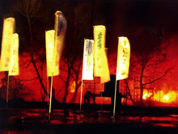
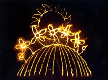

Skip Navigation | Home | Contact | Picture Gallery | Projects
|
|
||||||||||
|   |
A Bit More OOMF! on New Years EveAfter the success of OOMF! in summer 2000 the OOMF! team worked with Oxford City Council on a Millennium Commission supported New Year's Eve event – A Bit More OOMF! on New Year's Eve. The event linked with the national chain of beacon lighting and featured banners, commissioned firesculptures and pyrotechnics in a family event performance choreographed to music. A wintry feel to the performance included snowstorms (artificial and real), and music by the firelight of braziers. Over 5,000 enjoyed the event in winter storms which saw many New Year's Eve events across the country cancelled because of the bad weather. |
||||||||||
Home | Company Information | Links | Contact
Oxford Open Water | Hydrogen Two Oxygen | Oxfordshire Heritage Boat Journeys
OOMF! 2000 | A Bit More OOFM! New Year's Eve | OOMF! Open City 2002
Banbury Museum Workshops | Picture Gallery